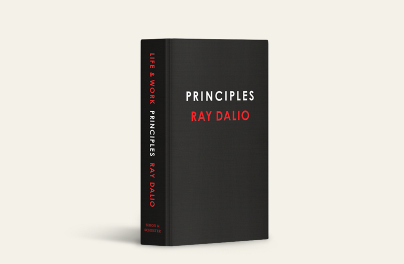

The following are my quick un-edited responses to the excellent book Principles by Ray Dallio.
It’s not a summary, but more how I understood it as a tool to clarify my thoughts. If you find it helpful, read on.
Maybe I’ll post more, there are a lot of take aways in this book, but here are a couple on finding truth and taking better decisions.
Finding truth is Ego suppression
Being content and effective in life comes down to aligning your actions and intent as close as possible with reality. This doesn’t imply settling for status quo. Rather, that believing things which aren’t true will certainly lead to more painful failure. How do we establish “truthy” beliefs then? What is the process by which we go off course?
The greatest source of balance in life comes from resolving the conflict between the “lower you” and the “upper you”. The “lower you” is the automatic responses, emotional chemical releases and subconscious thought and the “upper you” is with the neocortex, our ability to conceive of perspectives outside of ourselves. One way to think of this is that the “lower you” provides the creative fuel, but the “upper you” should provide the direction and throttle.
This struggle is played out through the many decisions any of us takes day-to-day. Perhaps we feel something, we are in a certain mood or we have been habituated to a pattern. All of this forms what we call “instinct”. And then the conscious mind tries to validate the outcome of following the instinct vs. learning, synthesizing and taking a new decision.
Believability
If you are lucky enough to find yourself in a position of authority, it probably means you are spending more of your time taking decisions and less of your time working on a decision someone else made. Good organizations don’t have this distinction as much as bad ones, but it will nevertheless occur.
So when you’re in a leadership role, you are essentially in the business of decision making (that’s the point). As I mentioned earlier, good decisions are ones which are more reflective of reality. Principles outlines a series of guidelines which help in this process.
The first one that struck me is the idea of “Believability.” For every idea we have, it’s important to remember to think about how believable the idea is, how believable we are, and how believable any other sources we rely on to validate the idea are.
For example, let’s take the fad Paleo diet. The idea is that humans have only recently adopted agriculture (~15k years) and as such, we are biologically evolved to eat a lot of meat and berries and roots and stuff like that. Eating this way we cause less resistance from our bodies (plus, meat is yummy).
Personally, I would rate this idea a 5/10 on believability. It is true that our ancestors were hunter gatherer’s for 2MM years and only very recently started eating crops. On the other hand, there are various groups of people with vastly different diets that evolved in different parts of the world, people died fairly young in those days, and evolution didn’t “stop working” 15k years ago.
But then, I have to look at my own ability to make those judgements: College anthropology class, some independent interest in evolution, reasonably good anecdotal knowledge of nutrition from conscious eating. I’d rate my own believability in judging this idea at 3/10. I know enough to understand points and counter points, but not the nuance or data to actually call it.
Now. How do I make a good decision? I could ask people who’ve been on the diet. I could ask a nutritionist. I could ask an evolutionary biologist.
If I had to rank these, I would put the nutrionist and evolutionary biologist at the top and the dieters below. And then, when discussing with them — it would be crucial that I look to expose weaknesses in my thinking, never to push my point. Their “believability” is a filter through which my “lower self” is checked.
Tldr: When taking a decision, always check if you are a believable source and if not, seek out people who are. Proceed only with the knowledge of how believable you are.
Originally published at http://www.jacobsingh.name on July 20, 2018.